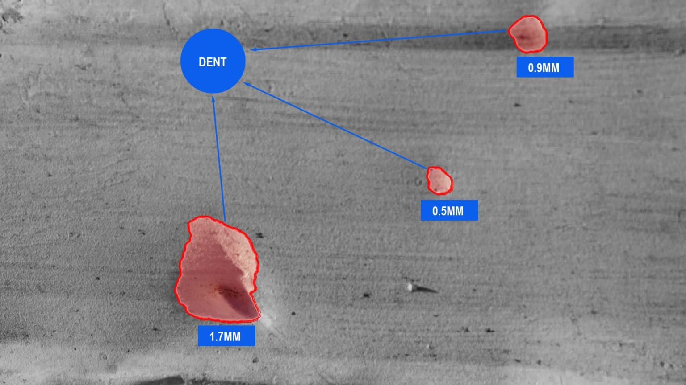
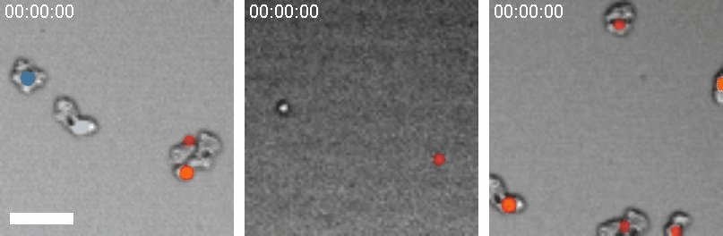
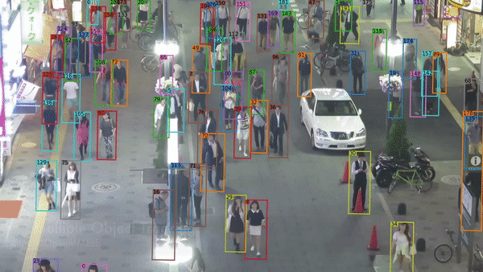

Standard AI fails when things get dusty, dark, or messy.
I am a physicist. I build custom vision systems for heavy industry.
My models work in high-noise environments (construction, mining, manufacturing, logistics) where off-the-shelf software breaks.
Scope of work (examples of past/current clients): Automated grading for luxury leather (micro-defect detection), biomass estimation in high-turbidity shrimp ponds, and high-speed sorting for organic agricultural products (cashews/coffee/rice).
No proprietary sensors required. Use existing or standard cameras. You get the code and the custom AI model. You own the IP. No subscriptions.

Defect & Crack Detection
Catch failures early. Automatically spot micro-fractures, leaks, or material fatigue on the production line. I train models to see defects that human inspectors miss.


High-Noise/Turbid Analysis
See through the mess. My PhD research focused on tracking objects in turbid, chaotic liquids. I apply that same physics-based logic to inspect pipelines, chemical flows, and messy industrial feeds.


Site Safety & Tracking
Track assets in real-time. Monitor vehicles, PPE compliance, and personnel entering hazard zones. Works in rain, fog, and low-light conditions where standard cameras fail.


Logistics & Counting
Automate the paperwork. Instant counting of pipe segments, timber, or containers. High-speed reading of labels and serial numbers to eliminate manual entry errors.